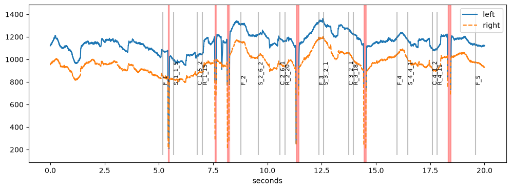
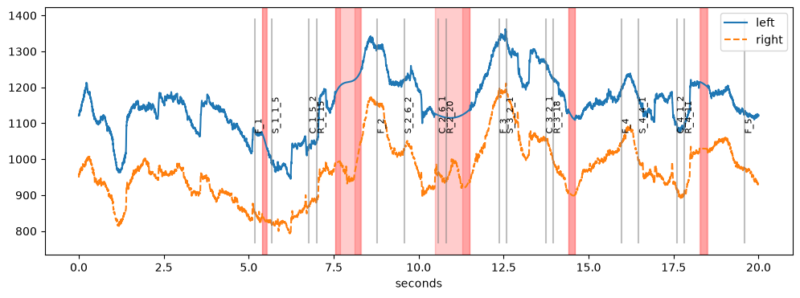
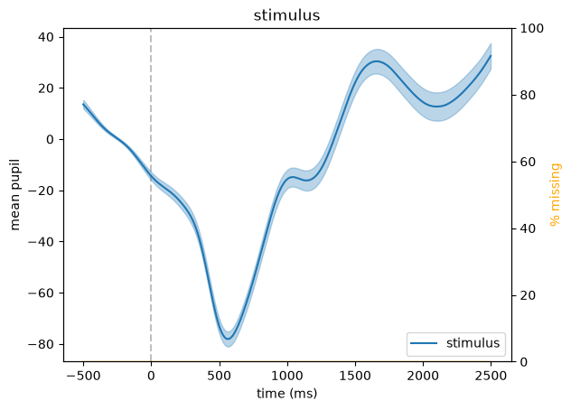

Quickstart#
This page walks through a typical analysis: load a recording, look at it, deal with blinks, filter the signal and compute the average pupil response to an event. Every step links to a page with more details.
We start by importing the package. u holds the units (e.g., u.ms, u.sec) that can be attached to times and distances. By default, pypillometry logs every step; here we only show warnings.
[1]:
import pypillometry as pp
from pypillometry import u
import matplotlib.pyplot as plt
import pandas as pd
pp.logging_set_level("WARNING") # show only warnings, not every step
Load data#
pypillometry comes with a few example datasets. rlmw_002_short is the first 40 seconds of a binocular recording from a reinforcement-learning task, recorded with an Eyelink eye tracker at 500 Hz.
[2]:
d = pp.get_example_data("rlmw_002_short")
d
[2]:
EyeData — rlmw_002_short
Signal overview
![left_pupil sparkline]()
![left_x sparkline]()
![left_y sparkline]()
![right_pupil sparkline]()
![right_x sparkline]()
![right_y sparkline]()
Data glimpse
EyeDataDict(vars=6,n=20465,shape=(20465,)): left_x (float64): 655.6, 655.7, 655.0, 654.5, 655.0... left_y (float64): 599.9, 598.9, 597.6, 597.8, 597.8... left_pupil (float64): 1121.0, 1122.0, 1124.0, 1126.0, 1126.0... right_x (float64): 773.1, 773.8, 774.8, 776.3, 776.7... right_y (float64): 594.2, 593.9, 596.5, 597.4, 597.3... right_pupil (float64): 949.0, 951.0, 956.0, 959.0, 960.0...
Recent history
- reset_time()
The result is an EyeData object holding pupil size and gaze position (x, y) of both eyes, the time vector, the events (triggers sent by the experiment) and a description of the experimental setup. At the bottom, you can see the history of all operations applied to the data.
Your own Eyelink files are read with EyeData.from_eyelink():
d = pp.EyeData.from_eyelink("recording.edf")
See Loading data for other formats.
The data is stored under keys of the form <eye>_<variable>:
[3]:
print(d.eyes, d.variables)
d["left_pupil"][:10]
['left', 'right'] ['x', 'y', 'pupil']
[3]:
masked_array(data=[1121.0, 1122.0, 1124.0, 1126.0, 1126.0, 1124.0, 1123.0,
1122.0, 1122.0, 1122.0],
mask=[False, False, False, False, False, False, False, False,
False, False],
fill_value=nan)
Look at the data#
All plotting functions are available under d.plot. Here we plot the pupil size of both eyes for the first 20 seconds; the vertical lines mark events and the shaded areas are blinks (none have been detected yet).
[4]:
plt.figure(figsize=(12, 4))
d.plot.plot_pupil(plot_range=(0, 20) * u.sec);

For long recordings, the interactive viewer is faster: pp.view(d) opens the data in a separate window (see Interactive tools).
Data quality#
Before processing, it is worth checking how good the recording is. quality_report() summarizes missing data, dropouts and noise of the pupil, missing and off-screen samples and precision of the gaze, the agreement between the eyes and the calibration errors stored in the Eyelink file. Each measure is labeled “good”, “ok”, “poor” or “bad” (the thresholds are rules of thumb); after preprocessing, the report also covers blinks and interpolated data. See Data
quality for the measures and how to change the thresholds.
[5]:
d.quality_report()
[5]:
Quality report — rlmw_002_short (EyeData)
ok| duration | 0.682 min |
| sampling rate | 500 Hz |
| samples | 20465 |
| events | 40 |
| time gaps | 0 |
| left | right | |
|---|---|---|
| missing data | 2.7% good | 1.9% good |
| dropouts | 16.1 /min good | 14.7 /min good |
| longest dropout | 0.14 s good | 0.12 s good |
| noise | 0.094% good | 0.11% good |
| noise (SD) | 1.05 | 1.05 |
| jumps | 0 /min good | 0 /min good |
| left | right | |
|---|---|---|
| missing data | 2.7% good | 1.9% good |
| off-screen | 0.21% good | 0.24% good |
| precision | 0.0202 deg good | 0.02 deg good |
| left/right | |
|---|---|
| pupil correlation | 0.866 ok |
| gaze disparity | 1.61 deg ok |
Thresholds
| pupil.missing_pct | good <= 10, ok <= 20, poor <= 40, else bad |
| pupil.dropout_rate | good <= 30, ok <= 60, poor <= 150, else bad |
| pupil.longest_dropout | good <= 2, ok <= 5, poor <= 30, else bad |
| pupil.noise | good <= 0.5, ok <= 1, poor <= 2, else bad |
| pupil.jump_rate | good <= 1, ok <= 10, poor <= 100, else bad |
| gaze.missing_pct | good <= 10, ok <= 20, poor <= 40, else bad |
| gaze.dropout_rate | good <= 30, ok <= 60, poor <= 150, else bad |
| gaze.longest_dropout | good <= 2, ok <= 5, poor <= 30, else bad |
| gaze.offscreen_pct | good <= 5, ok <= 15, poor <= 30, else bad |
| gaze.precision_deg | good <= 0.05, ok <= 0.1, poor <= 0.2, else bad |
| binocular.pupil_correlation | good >= 0.9, ok >= 0.8, poor >= 0.6, else bad |
| binocular.gaze_disparity_deg | good <= 1, ok <= 2, poor <= 3, else bad |
| blinks.rate | good <= 20, ok <= 35, poor <= 70, else bad |
| blinks.time_pct | good <= 10, ok <= 20, poor <= 35, else bad |
| artifacts.pupil_masked_pct | good <= 10, ok <= 20, poor <= 35, else bad |
| artifacts.gaze_masked_pct | good <= 10, ok <= 20, poor <= 35, else bad |
| artifacts.interpolated_pct | good <= 10, ok <= 20, poor <= 30, else bad |
| calibration.mean_error | good <= 0.5, ok <= 1, poor <= 1.5, else bad |
| calibration.max_error | good <= 1, ok <= 1.5, poor <= 2, else bad |
Events#
The events are the triggers that the experiment software sent to the eye tracker. d.events holds them as an Events object, which displays as a table:
[6]:
events = d.events
events[:8]
[6]:
| Onset (ms) | Label | |
|---|---|---|
| 0 | 5177.0 | F_1 |
| 1 | 5677.0 | S_1_1_5 |
| 2 | 6773.0 | C_1_5_2 |
| 3 | 7010.0 | R_1_15 |
| 4 | 8776.0 | F_2 |
| 5 | 9575.0 | S_2_6_2 |
| 6 | 10581.0 | C_2_6_1 |
| 7 | 10808.0 | R_2_20 |
Total: 8 events
In this task, each trial has four events whose labels start with F, S, C and R, followed by the trial number and some trial-specific information. filter() selects events, e.g., all labels containing "S_":
[7]:
events.filter("S_")
[7]:
| Onset (ms) | Label | |
|---|---|---|
| 0 | 5677.0 | S_1_1_5 |
| 1 | 9575.0 | S_2_6_2 |
| 2 | 12574.0 | S_3_2_1 |
| 3 | 16473.0 | S_4_4_1 |
| 4 | 20388.0 | S_5_3_5 |
| 5 | 23987.0 | S_6_4_5 |
| 6 | 27002.0 | S_7_3_1 |
| 7 | 30601.0 | S_8_6_5 |
| 8 | 34799.0 | S_9_4_6 |
| 9 | 38415.0 | S_10_2_5 |
Total: 10 events
More in the Events tutorial.
Blinks#
During blinks, the eye tracker loses the pupil. pupil.blinks_detect() finds blinks and marks (masks) the affected samples, so that they are ignored in later steps. Short gaps between blinks are merged with pupil.blinks_merge_close().
Processing steps can be combined into a pipeline with | (pp.pupil.<method> is a step for the method d.pupil.<method>); d | step returns a processed copy of d:
[8]:
d = d | pp.pupil.blinks_detect() | pp.pupil.blinks_merge_close(distance=100 * u.ms)
pd.DataFrame(d.blink_stats()).T
[8]:
| n | mean | sd | min | max | total_duration | units | |
|---|---|---|---|---|---|---|---|
| left_pupil | 13 | 235.230769 | 260.023121 | 48.0 | 984.0 | 3058.0 | ms |
| right_pupil | 13 | 138.0 | 84.85644 | 44.0 | 404.0 | 1794.0 | ms |
pupil.blinks_interpolate() then replaces the pupil size during blinks with a smooth interpolation (Mathôt, 2013). The interpolated samples are used in the analyses like the recorded ones, but they keep their mask layers ("blink", "interpolated"), so you can still tell them apart (see Masks).
[9]:
d.pupil.blinks_interpolate();
plt.figure(figsize=(12, 4))
d.plot.plot_pupil(plot_range=(0, 20) * u.sec);

Blink detection often needs some tuning per participant. The blinks tutorial shows how to check and adjust it.
Filtering#
Pupil size changes slowly, so high-frequency noise is usually removed with a low-pass filter (here, 4 Hz):
[10]:
d.pupil.lowpass_filter(cutoff=4);
Every step was recorded in the object’s history:
[11]:
d.print_history()
* rlmw_002_short
└ reset_time()
└ pupil.blinks_detect()
└ pupil.blinks_merge_close(distance=100 ms)
└ pupil.blinks_interpolate()
└ pupil.lowpass_filter(cutoff=4)
Note that the method calls (d.pupil.blinks_interpolate(), d.pupil.lowpass_filter()) changed d itself (they work in place), whereas d | step returned a changed copy. Use inplace=False or d.copy() to keep the original with a method call; see Pipelines and history.
Event-related pupil dilation#
How does the pupil respond to the stimulus? The short example contains only ten trials, so we switch to the full 20-minute recording of the same participant (about 300 trials). It is downloaded once (37 MB) and then cached. We apply the same steps as above, this time as a single pipeline (a pipeline is a value: it can be printed, stored and applied to other recordings, too):
[12]:
preproc = (pp.pupil.blinks_detect()
| pp.pupil.blinks_merge_close(distance=100 * u.ms)
| pp.pupil.blinks_interpolate()
| pp.pupil.lowpass_filter(cutoff=4))
d = pp.get_example_data("rlmw_002") | preproc
First, get_epochs() selects a time window around each stimulus event, from 500 ms before until 2500 ms after its onset. The result is an Epochs object (see the Intervals tutorial):
[13]:
epochs = d.get_epochs("S_", (-500, 2500) * u.ms)
epochs
[13]:
Epochs 'S_' | 300 epochs, window (-500, 2500) ms
get_segments() cuts these windows out of one variable, here the pupil of the right eye. After subtracting the mean of the 500 ms before the stimulus from each segment (baseline correction), plot() shows the average response with its standard error:
[14]:
erpd = d.get_segments(epochs, "right_pupil", name="stimulus")\
.pupil.baseline_correct((-500, 0))
erpd
[14]:
SegmentedEyeData — stimulus
Channels (mean over segments; red line = event onset)
![right_pupil (0.0% missing) sparkline]()
Epochs
Epochs 'S_' | 300 epochs, window (-500, 2500) ms
[15]:
erpd.pupil.plot();

The pupil first constricts (a light response to the stimulus on the screen) and then dilates. The orange line (right axis) shows the percentage of masked (unusable) samples at each time point; it is zero here because all blinks were interpolated.
With several participants, pp.group_segments() combines their responses into a group-level curve (see the ERPD tutorial).
Instead of whole curves, stat_per_event() computes one number per trial, e.g., the mean pupil size in the second after each stimulus. This is useful for statistical models of trial-by-trial data:
[16]:
means = d.stat_per_event(window=(0, 1000) * u.ms, event_select="S_",
variables="pupil")
pd.DataFrame(means).round(1).head()
[16]:
| left_pupil | right_pupil | |
|---|---|---|
| 0 | 1002.5 | 831.2 |
| 1 | 1174.6 | 965.8 |
| 2 | 1270.0 | 1077.6 |
| 3 | 1152.6 | 955.6 |
| 4 | 1098.4 | 912.2 |
Save the result#
write_file() saves the processed object including its history; read it back with pp.EyeData.from_file():
d.write_file("subject01.pypil")
d = pp.EyeData.from_file("subject01.pypil")
Next steps#
The User guide explains the concepts used here in more detail.
The Tutorials contain worked examples for specific tasks.
The API reference lists all classes and functions.